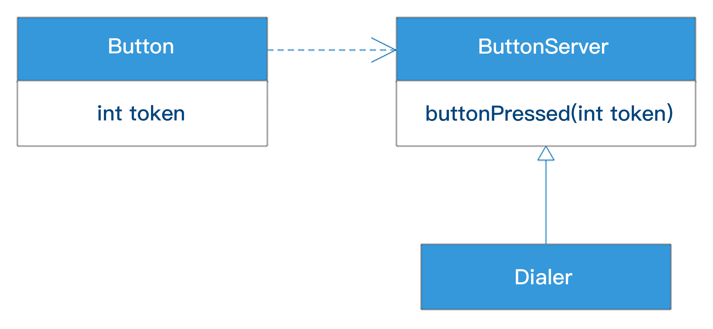
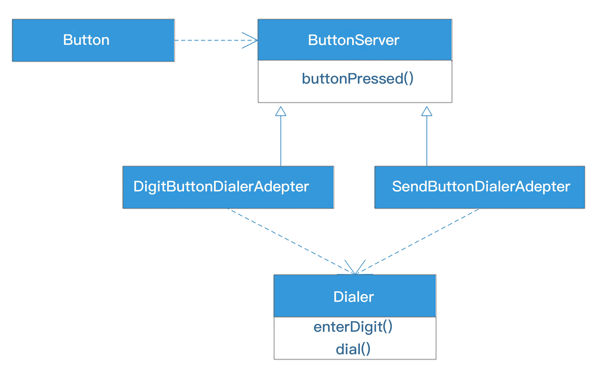
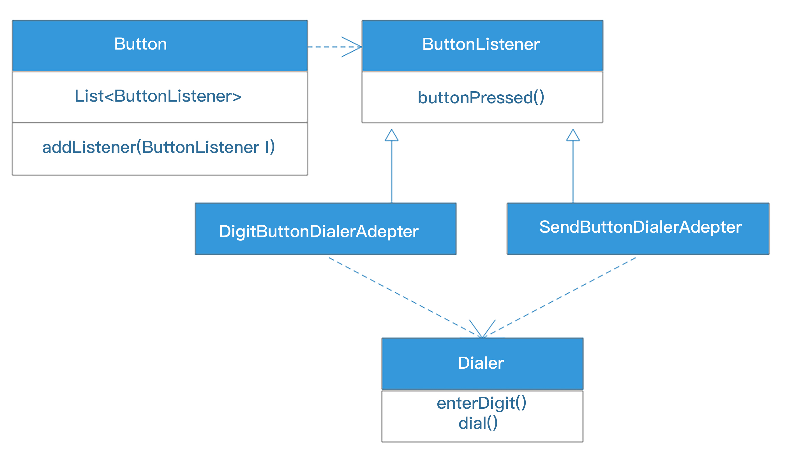
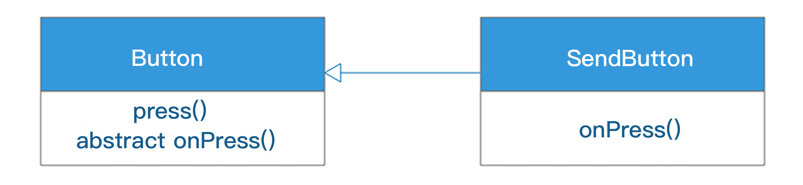

- 00 开篇词 掌握软件开发技术的第一性原理.md.html
- 01 程序运行原理：程序是如何运行又是如何崩溃的？.md.html
- 02 数据结构原理：Hash表的时间复杂度为什么是O(1)？.md.html
- 03 Java虚拟机原理：JVM为什么被称为机器（machine）？.md.html
- 04 网络编程原理：一个字符的互联网之旅.md.html
- 05 文件系统原理：如何用1分钟遍历一个100TB的文件？.md.html
- 06 数据库原理：为什么PrepareStatement性能更好更安全？.md.html
- 07 答疑 Java Web程序的运行时环境到底是怎样的？.md.html
- 07 编程语言原理：面向对象编程是编程的终极形态吗？.md.html
- 08 软件设计的方法论：软件为什么要建模？.md.html
- 09 软件设计实践：如何使用UML完成一个设计文档？.md.html
- 10 软件设计的目的：糟糕的程序员比优秀的程序员差在哪里？.md.html
- 11 软件设计的开闭原则：如何不修改代码却能实现需求变更？.md.html
- 12 软件设计的依赖倒置原则：如何不依赖代码却可以复用它的功能？.md.html
- 13 软件设计的里氏替换原则：正方形可以继承长方形吗？.md.html
- 14 软件设计的单一职责原则：为什么说一个类文件打开最好不要超过一屏？.md.html
- 15 软件设计的接口隔离原则：如何对类的调用者隐藏类的公有方法？.md.html
- 16 设计模式基础：不会灵活应用设计模式，你就没有掌握面向对象编程.md.html
- 17 设计模式应用：编程框架中的设计模式.md.html
- 18 反应式编程框架设计：如何使程序调用不阻塞等待，立即响应？.md.html
- 19 组件设计原则：组件的边界在哪里？.md.html
- 20 答疑 对于设计模式而言，场景到底有多重要？.md.html
- 20 领域驱动设计：35岁的程序员应该写什么样的代码？.md.html
- 21 分布式架构：如何应对高并发的用户请求.md.html
- 22 缓存架构：如何减少不必要的计算？.md.html
- 23 异步架构：如何避免互相依赖的系统间耦合？.md.html
- 24 负载均衡架构：如何用10行代码实现一个负载均衡服务？.md.html
- 25 数据存储架构：如何改善系统的数据存储能力？.md.html
- 26 搜索引擎架构：如何瞬间完成海量数据检索？.md.html
- 27 微服务架构：微服务究竟是灵丹还是毒药？.md.html
- 28 高性能架构：除了代码，你还可以在哪些地方优化性能？.md.html
- 29 高可用架构：我们为什么感觉不到淘宝应用升级时的停机？.md.html
- 30 安全性架构：为什么说用户密码泄漏是程序员的锅？.md.html
- 31 大数据架构：大数据技术架构的思想和原理是什么？.md.html
- 32 AI与物联网架构：从智能引擎到物联网平台.md.html
- 33 区块链技术架构：区块链到底能做什么？.md.html
- 33 答疑 互联网需要解决的技术问题是什么？.md.html
- 34 技术修炼之道：同样工作十几年，为什么有的人成为大厂架构师，有的人失业？.md.html
- 35 技术进阶之道：你和这个星球最顶级的程序员差几个等级？.md.html
- 36 技术落地之道：你真的知道自己要解决的问题是什么吗？.md.html
- 37 技术沟通之道：如何解决问题？.md.html
- 38 技术管理之道：你真的要转管理吗？.md.html
- 38 答疑 工作中的交往和沟通，都有哪些小技巧呢？.md.html
- 加餐 软件设计文档示例模板.md.html
- 结束语 期待未来的你，成为优秀的软件架构师.md.html
- 捐赠
11 软件设计的开闭原则：如何不修改代码却能实现需求变更？
我在上篇文章讲到，软件设计应该为需求变更而设计，应该能够灵活、快速地满足需求变更的要求。优秀的程序员也应该欢迎需求变更，因为持续的需求变更意味着自己开发的软件保持活力，同时也意味着自己为需求变更而进行的设计有了用武之地，这样的话，技术和业务都进入了良性循环。
但是需求变更就意味着原来开发的功能需要改变，也意味着程序需要改变。如果是通过修改程序代码实现需求变更，那么代码一定会在不断修改的过程中变得面目全非，这也意味着代码的腐坏。
有没有办法不修改代码却能实现需求变更呢？
这个要求听起来有点玄幻，事实上却是软件设计需要遵循的最基本的原则：开闭原则。
开闭原则
开闭原则说：软件实体（模块、类、函数等等）应该对扩展是开放的，对修改是关闭的。
对扩展是开放的，意味着软件实体的行为是可扩展的，当需求变更的时候，可以对模块进行扩展，使其满足需求变更的要求。
对修改是关闭的，意味着当对软件实体进行扩展的时候，不需要改动当前的软件实体；不需要修改代码；对于已经完成的类文件不需要重新编辑；对于已经编译打包好的模块，不需要再重新编译。
通俗的说就是，软件功能可以扩展，但是软件实体不可以被修改。
功能要扩展，软件又不能修改，似乎是自相矛盾的，怎样才能做到不修改代码和模块，却能实现需求变更呢？
一个违反开闭原则的例子
在开始讨论前，让我们先看一个反面的例子。
假设我们需要设计一个可以通过按钮拨号的电话，核心对象是按钮和拨号器。那么简单的设计可能是这样的：
按钮类关联一个拨号器类，当按钮按下的时候，调用拨号器相关的方法。代码是这样的：
public class Button {
public final static int SEND_BUTTON = -99;
private Dialer dialer;
private int token;
public Button(int token, Dialer dialer) {
this.token = token;
this.dialer = dialer;
}
public void press() {
switch (token) {
case 0:
case 1:
case 2:
case 3:
case 4:
case 5:
case 6:
case 7:
case 8:
case 9:
dialer.enterDigit(token);
break;
case SEND_BUTTON:
dialer.dial();
break;
default:
throw new UnsupportedOperationException("unknown button pressed: token=" + token);
}
}
}
public class Dialer {
public void enterDigit(int digit) {
System.out.println("enter digit: " + digit);
}
public void dial() {
System.out.println("dialing...");
}
}
按钮在创建的时候可以创建数字按钮或者发送按钮，执行按钮的press()方法的时候，会调用拨号器Dialer的相关方法。这个代码能够正常运行，完成需求，设计似乎也没什么问题。
这样的代码我们司空见惯，但是它的设计违反了开闭原则：当我们想要增加按钮类型的时候，比如，当我们需要按钮支持星号（*）和井号（#）的时候，我们必须修改Button类代码；当我们想要用这个按钮控制一个密码锁而不是拨号器的时候，因为按钮关联了拨号器，所以依然要修改Button类代码；当我们想要按钮控制多个设备的时候，还是要修改Button类代码。
似乎对Button类做任何的功能扩展，都要修改Button类，这显然违反了开闭原则：对功能扩展是开放的，对代码修改是关闭的。
违反开闭原则的后果是，这个Button类非常僵硬，当我们想要进行任何需求变更的时候，都必须要修改代码。同时我们需要注意，大段的switch/case语句是非常脆弱的，当需要增加新的按钮类型的时候，需要非常谨慎地在这段代码中找到合适的位置，稍不小心就可能出现bug。粗暴一点说，当我们在代码中看到else或者switch/case关键字的时候，基本可以判断违反开闭原则了。
而且，这个Button类也是难以复用的，Button类强耦合了一个Dialer类，在脆弱的switch/case代码段耦合调用了Dialer的方法，即使Button类自身也将各种按钮类型耦合在一起，当我想复用这个Button类的时候，不管我需不需要一个Send按钮，Button类都自带了这个功能。
所以，这样的设计不要说不修改代码就能实现功能扩展，即使我们想修改代码进行功能扩展，里面也很脆弱，稍不留心就掉到坑里了。这个时候你再回头审视Button的设计，是不是就感觉到了代码里面腐坏的味道，如果让你接手维护这些代码实现需求变更，是不是头疼难受？
很多设计开始看并没有什么问题，如果软件开发出来永远也不需要修改，也许怎么设计都可以，但是当需求变更来的时候，就会发现各种僵硬、脆弱。所以设计的优劣需要放入需求变更的场景中考察。当需求变更时发现当前设计的腐坏，就要及时进行重构，保持设计的强壮和代码的干净。
使用策略模式实现开闭原则
设计模式中很多模式其实都是用来解决软件的扩展性问题的，也是符合开闭原则的。我们用策略模式对上面的例子重新进行设计。

我们在Button和Dialer之间增加了一个抽象接口ButtonServer，Button依赖ButtonServer，而Dialer实现ButtonServer。
当Button按下的时候，就调用ButtonServer的buttonPressed方法，事实上是调用Dialer实现的buttonPressed方法，这样既完成了Button按下的时候执行Dialer方法的需求，又不会使Button依赖Dialer。Button可以扩展复用到其他需要使用Button的场景，任何实现ButtonServer的类，比如密码锁，都可以使用Button，而不需要对Button代码进行任何修改。
而且Button也不需要switch/case代码段去判断当前按钮类型，只需要将按钮类型token传递给ButtonServer就可以了，这样增加新的按钮类型的时候就不需要修改Button代码了。
策略模式是一种行为模式，多个策略实现同一个策略接口，编程的时候client程序依赖策略接口，运行期根据不同上下文向client程序传入不同的策略实现。
在我们这个场景中，client程序就是Button，策略就是需要用Button控制的目标设备，拨号器、密码锁等等，ButtonServer就是策略接口。通过使用策略模式，我们使Button类实现了开闭原则。
使用适配器模式实现开闭原则
Button符合开闭原则了，但是Dialer又不符合开闭原则了，因为Dialer要实现ButtonServer接口，根据参数token决定执行enterDigit方法还是dial方法，又需要if/else或者switch/case，不符合开闭原则。
那怎么办？
这种情况可以使用适配器模式进行设计。适配器模式是一种结构模式，用于将两个不匹配的接口适配起来，使其能够正常工作。

不要由Dialer类直接实现ButtonServer接口，而是增加两个适配器DigitButtonDialerAdapter、SendButtonDialerAdapter，由适配器实现ButtonServer接口，在适配器的buttonPressed方法中调用Dialer的enterDigit方法和dial方法，而Dialer类保持不变，Dialer类实现开闭原则。
在我们这个场景中，Button需要调用的接口是buttonPressed，和Dialer的方法不匹配，如何在不修改Dialer代码的前提下，使Button能够调用Dialer代码？就是靠适配器，适配器DigitButtonDialerAdapter和SendButtonDialerAdapter实现了ButtonServer接口，使Button能够调用自己，并在自己的buttonPressed方法中调用Dialer的方法，适配了Dialer。
使用观察者模式实现开闭原则
通过策略模式和适配器模式，我们使Button和Dialer都符合了开闭原则。但是如果要求能够用一个按钮控制多个设备，比如按钮按下进行拨号的同时，还需要扬声器根据不同按钮发出不同声音，将来还需要根据不同按钮点亮不同颜色的灯。按照当前设计，可能需要在适配器中调用多个设备，增加设备要修改适配器代码，又不符合开闭原则了。
怎么办？
这种情况可以用观察者模式进行设计：

这里，ButtonServer被改名为ButtonListener，表示这是一个监听者接口，其实这个改名不重要，仅仅是为了便于识别。因为接口方法buttonPressed不变，ButtonListener和ButtonServer本质上是一样的。
重要的是在Button类里增加了成员变量List和成员方法addListener。通过addListener，我们可以添加多个需要观察按钮按下事件的监听者实现，当按钮需要控制新设备的时候，只需要将实现了ButtonListener的设备实现添加到Button的List列表就可以了。
Button代码：
public class Button {
private List<ButtonListener> listeners;
public Button() {
this.listeners = new LinkedList<ButtonListener>();
}
public void addListener(ButtonListener listener) {
assert listener != null;
listeners.add(listener);
}
public void press() {
for (ButtonListener listener : listeners) {
listener.buttonPressed();
}
}
}
Dialer代码和原始设计一样，如果我们需要将Button和Dialer组合成一个电话，Phone代码如下：
public class Phone {
private Dialer dialer;
private Button[] digitButtons;
private Button sendButton;
public Phone() {
dialer = new Dialer();
digitButtons = new Button[10];
for (int i = 0; i < digitButtons.length; i++) {
digitButtons[i] = new Button();
final int digit = i;
digitButtons[i].addListener(new ButtonListener() {
public void buttonPressed() {
dialer.enterDigit(digit);
}
});
}
sendButton = new Button();
sendButton.addListener(new ButtonListener() {
public void buttonPressed() {
dialer.dial();
}
});
}
public static void main(String[] args) {
Phone phone = new Phone();
phone.digitButtons[9].press();
phone.digitButtons[1].press();
phone.digitButtons[1].press();
phone.sendButton.press();
}
}
观察者模式是一种行为模式，解决一对多的对象依赖关系，将被观察者对象的行为通知到多个观察者，也就是监听者对象。
在我们这个场景中，Button是被观察者，目标设备拨号器、密码锁等是观察者。被观察者和观察者通过Listener接口解耦合，观察者（的适配器）通过调用被观察者的addListener方法将自己添加到观察列表，当观察行为发生时，被观察者会逐个遍历Listener List，通知观察者。
使用模板方法模式实现开闭原则
如果业务要求按下按钮的时候，除了控制设备，按钮本身还需要执行一些操作，完成一些成员变量的状态更改，不同按钮类型进行的操作和记录状态各不相同。按照当前设计可能又要在Button的press方法中增加switch/case了。
怎么办？
这种情况可以用模板方法模式进行设计：

在Button类中定义抽象方法onPress，具体类型的按钮，比如SendButton实现这个方法。Button类中增加抽象方法onPress，并在press方法中调用onPress方法：
abstract void onPress();
public void press() {
onPress();
for (ButtonListener listener : listeners) {
listener.buttonPressed();
}
}
所谓模板方法模式，就是在父类中用抽象方法定义计算的骨架和过程，而抽象方法的实现则留在子类中。
在我们这个例子中，press方法就是模板，press方法除了调用抽象方法onPress，还执行通知监听者列表的操作，这些抽象方法和具体操作共同构成了模板。而在子类SendButton中实现这个抽象方法，在这个方法中修改状态，完成自己类型特有的操作，这就是模板方法模式。
通过模板方法模式，每个子类可以定义自己在press执行时的状态操作，无需修改Button类，实现了开闭原则。
小结
实现开闭原则的关键是抽象。当一个模块依赖的是一个抽象接口的时候，就可以随意对这个抽象接口进行扩展，这个时候，不需要对现有代码进行任何修改，利用接口的多态性，通过增加一个新实现该接口的实现类，就能完成需求变更。不同场景进行扩展的方式是不同的，这时候就会产生不同的设计模式，大部分的设计模式都是用来解决扩展的灵活性问题的。
开闭原则可以说是软件设计原则的原则，是软件设计的核心原则，其他的设计原则更偏向技术性，具有技术性的指导意义，而开闭原则是方向性的，在软件设计的过程中，应该时刻以开闭原则指导、审视自己的设计：当需求变更的时候，现在的设计能否不修改代码就可以实现功能的扩展？如果不是，那么就应该进一步使用其他的设计原则和设计模式去重新设计。
更多的设计原则和设计模式，我将在后面陆续讲解。
思考题
我在观察者模式小节展示的Phone代码示例中，并没有显式定义DigitButtonDialerAdapter和SendButtonDialerAdapter这两个适配器类，但它们是存在的。在哪里呢？
欢迎在评论区写下你的思考，我会和你一起交流，也欢迎把这篇文章分享给你的朋友或者同事，一起交流一下。
© 2019 - 2023 Liangliang Lee. Powered by gin and hexo-theme-book.